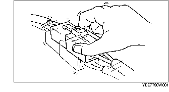

RICERCA DEI GUASTI INTERMITTENTI
B3E090358000W02
Guasti legati alle vibrazioni
• Se un malfunzionamento insorge o peggiora quando si guida su una strada sconnessa o quando il motore vibra, eseguire la procedura seguente:
-
Nota
-
• Ci sono diverse ragioni per cui le vibrazioni del veicolo o del motore possono causare un guasto elettrico. Tra le altre cose, occorre verificare se:
-
- I connettori non sono collegati saldamente.
-
- I cablaggi non sono adeguatamente laschi.
-
- I fili elettrici passano tra staffe o parti in movimento.
-
- I fili elettrici passano troppo vicino a parti calde.
-
• Se un cablaggio è disposto in modo improprio, non è fissato correttamente o è lasco, i fili possono impigliarsi nelle parti vicine ad essi.
-
• Le parti da controllare in modo speciale sono le connessioni, i punti soggetti a vibrazioni ed i punti in cui i fili passano attraverso la paratia, i pannelli della carrozzeria, ecc.
-
• Cercare di individuare la presenza di DTC o di eventuali guasti scuotendo i cablaggi e i connettori sospetti.

Controllo dei terminali dei connettori
1. Controllare il collegamento di ciascun terminale femmina.
2. Inserire il terminale maschio nel terminale femmina in modo da verificare se ci sono dei terminali femmina laschi.